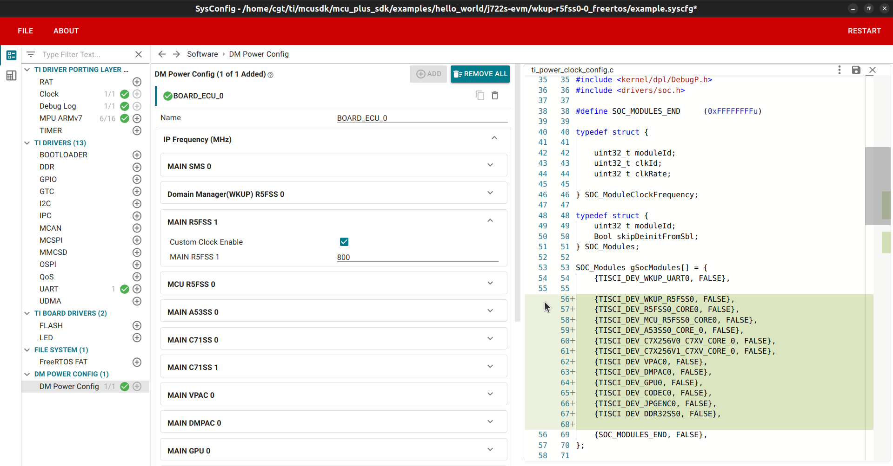
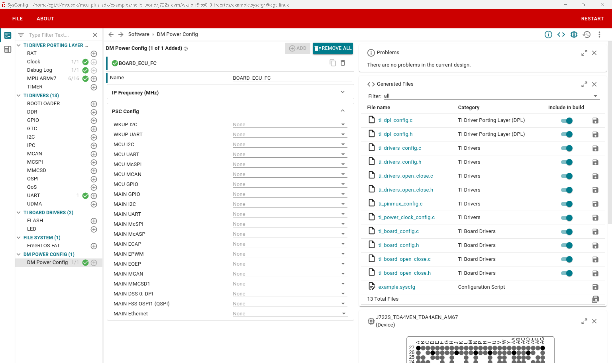

|
J722S MCU+ SDK
11.02.02
|
|
|
J722S MCU+ SDK
11.02.02
|
|
DM Power Configuration Tool offers a user-friendly GUI for PLL (IP Frequency) and PSC configuration for the supported SoCs. User can create multiple config for different usecase. Based on UI config, code is generated for single/multiple config.
The SysConfig should be installed in a directory with the following structure: /ti/sysconfig_, where HOME_DIR represents your home directory and SYSCONFIG_VERSION is the version of SysConfig.
If you wish to use a different version of SysConfig or change the installation path, simply update the SYSCONFIG_VERSION or SYSCFG_PATH in the Makefile.
Open the DM Power Config Tool GUI
Run the following command to open GUI (For Hello World Example):
make -s -C examples/hello_world/j722s-evm/wkup-r5fss0-0_freertos/ti-arm-clang/ syscfg-gui
Configure PLL and PSC
IP Frequency (MHz)
This tab presents a list of key IPs within the SoC and enables users to configure their frequencies. To set the desired frequency, select the appropriate value and check the "Custom Clock Enable" checkbox. If this checkbox is disabled, the IP frequency will not be configured.

Notes:
PSC Config
This tab lists IPs that can be enabled or disabled using the checkbox.

The configuration settings made in the GUI will be saved in the file examples/hello_world/j722s-evm/wkup-r5fss0-0_nortos/example.syscfg, . This file is utilized for generating the output code.
Generate Code Based on the Configuration
After configuring the desired settings in the GUI, execute the following command to generate the code:
make -s -C examples/hello_world/j722s-evm/wkup-r5fss0-0_freertos/ti-arm-clang/ syscfg
The generated code is included in the ti_power_clock_cfg.c file.
Build Example
make -s -C examples/hello_world/j722s-evm/wkup-r5fss0-0_freertos/ti-arm-clang/
For more information about the SDK SysConfig and how to use it, please refer to the MCU+ Academy.
Users can customize the list of IPs and PSCs supported by the tool. Refer to Customizing the Configuration Files for detailed instructions on how to add or remove IPs and PSCs from the tool.
 1.8.20
1.8.20